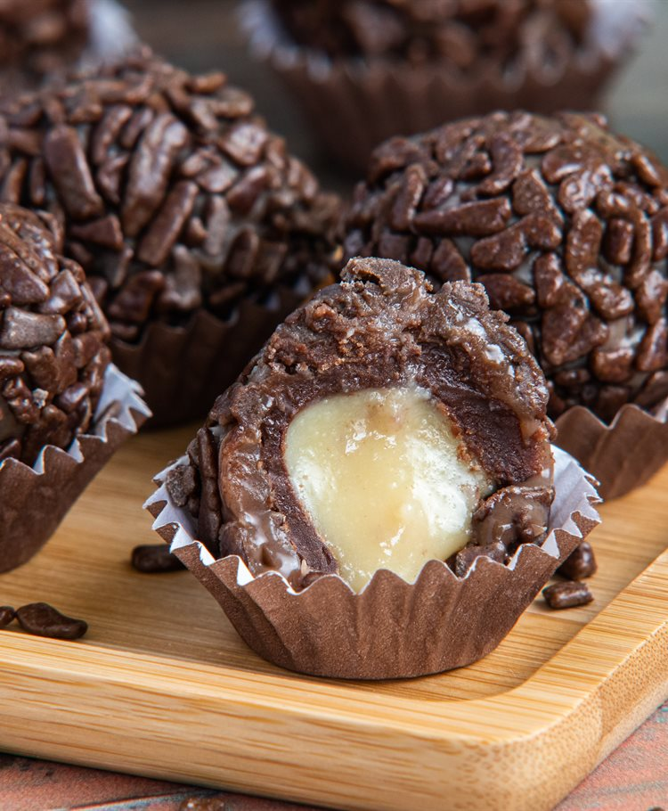
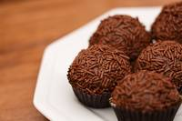

brigadeiro

ingredientes
- 1 lata de leite condensado
- 4 colheres de achocolatado em pó
- 1 colher de margarina
- 1 xicara de chá de chocolate granulado

modo de preparo
- Em uma panela, coloque o Leite MOÇA com o Chocolate em Pó DOIS FRADES e a manteiga
- Misture bem e leve ao fogo baixo, mexendo sempre até desprender do fundo da panela (cerca de 10 minutos).
- Retire do fogo, passe para um prato untado com manteiga e deixe esfriar.
- Com as mãos untadas, enrole em bolinhas e passe-as no granulado. Sirva em forminhas de papel.